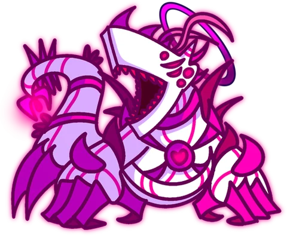
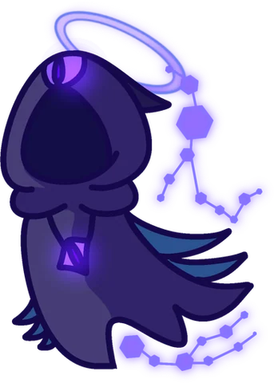

생각을 결과물로 완성하고 다른 사람 앞에 공개하는 일에도 힘이 필요합니다. 공모전과 대회, 전시를 통해 작업을 바깥으로 꺼내 왔습니다.
GEVURAH / 05
FIELD / EVENTS
공모전 · 대회 · 전시
참가한 공모전, 대회, 전시 목록
연도
구분
이름
2026
공모전
GIGDC
2026
공모전
인디크래프트
2026
전시
교내 지산학 페스티벌 게임 전시
2024
대회
청강게임대전
2024
전시
고등학교 축제 게임 전시
06티페레트 / TIFERET아름다움
- 세상을 매혹하는 아름다움 -
세계에 얼굴과 색을 입힙니다.
그림과 시각적 표현
티페레트의 아름다움은 이곳에서 그림으로 이어집니다. 캐릭터의 표정과 형태, 색을 통해 제가 상상한 세계를 눈앞에 꺼내 놓습니다.
TIFERET / 06
ILLUSTRATION / ART GALLERY
그림이 머무는 공간.
직접 그린 캐릭터와 세계를 전시합니다. 작품을 누르면 크게 볼 수 있습니다.
그림 관리에서 바로 올리고, 이름을 바꾸고, 지울 수 있습니다. 저장소 주인의 GitHub 토큰이 필요하며, 변경 후 약 1분 뒤 표시됩니다.
ART COLLECTION
☉
첫 작품을 전시해 주세요.
그림 업로드 버튼에서 작품을 올릴 수 있습니다.
07네차흐 / NETZACH승리
- 끝없는 살상의 승리 -
승리한 뒤에도, 이야기는 남습니다.
아르카의 선택과 서사
아르카에서 승리는 단순한 승패보다 무엇을 지켰고 어떤 대가를 감당했는지에 관한 질문입니다. 서로 다른 신념과 선택이 부딪히며 세계의 이야기가 됩니다.
NETZACH / 07
ORIGINAL UNIVERSE
ARKA아르카 세계관
다크 판타지 · SF 판타지 · 신화 · 다중우주
완전하지 않은 신들. 그들이 선택한 무수한 세계.
01 / OVERVIEW
선택이 세계의 운명을 바꿉니다.
아르카(ARKA)는 신의 권능과 자유의지, 창조와 파괴, 운명과 가능성이 교차하는 다중우주 세계관입니다. 신의 가치를 구현한 초월적 존재들과 그들이 개입하는 수많은 문명이 각자의 신념과 이상을 실현하기 위해 협력하고 대립합니다.
그러나 신이 추구하는 가치가 반드시 선을 의미하지는 않으며, 악으로 규정된 존재의 행동에도 나름의 신념과 이유가 존재합니다. 절대적인 자비는 악마저 구원하고, 완전한 정의는 무자비한 심판으로 변질되며, 모든 것을 사랑하려는 마음은 때로 가장 잔혹한 속박을 만들어냅니다.
선과 악은 인물을 구분하는 절대적인 기준이 아닙니다.
누군가에게는 구원이었던 선택이 다른 누군가에게는 재앙이 될 수 있으며, 정의를 위해 행해진 행동이 또 다른 불의를 낳기도 합니다. 어느 인물도 단순히 선인이나 악인으로 단정할 수 없으며, 그들이 추구하는 목적과 선택의 결과에 따라 서로 다른 평가를 받게 됩니다.
그렇다고 모든 신념이 정당한 것은 아닙니다. 아무리 숭고한 목적을 지녔더라도 그 과정에서 저지른 잔혹한 행위까지 정당화할 수는 없으며, 선한 의도 역시 비극적인 결과에 대한 책임을 지워주지는 않습니다.
02 / ORIGIN
신을 증명하려던 실험에서.
클리포트 트리니티 Qliphoth Trinity
보이지 않는 신의 존재를 증명하고 그 권능을 물리적으로 재현하기 위해 결성된 세 존재의 집단입니다. 알파 루시퍼, 베타 가브리엘, 감마 미카엘은 신을 구성하는 가치와 의미를 분리해 독립적인 존재로 구현하는 실험을 진행했으며, 그 결과 세피라가 탄생했습니다. 그러나 창조된 존재들이 독립적인 자아와 자유의지를 획득하여 통제를 벗어나자, 이를 해결하기 위한 새로운 실험이 클리파의 탄생으로 이어졌습니다.
세피로트의 나무 Tree of Sephiroth
신이 지닌 열 가지 가치와 의미를 구현한 초월적 존재, 세피라(Sephira)의 체계입니다. 이들은 완전한 신이 아닌 신의 일부로서, 자신에게 주어진 가치를 실현하는 과정에서 서로 다른 신념과 욕망을 형성하게 됩니다. 현실에 간섭하기 위해서는 숙주가 필요하며, 숙주와의 결합 결과에 따라 기존 자아를 지배하거나 공존할 수 있습니다.
클리포트의 나무 Tree of Qliphoth
세피라의 자유의지와 통제 불가능성을 해결하려는 후속 실험에서 탄생한 클리파(Qliphah)의 체계입니다. 세피라와 대립하는 권능을 지녔지만 단순히 악을 구현한 존재들은 아니며, 자신만의 목적과 신념에 따라 행동하면서 세계의 질서에 영향을 미칩니다.
03 / SEPHIRA
열 가지 가치, 열 가지 질문.
이름을 선택하면 기원과 서사가 펼쳐집니다. 이야기의 주요 전개와 결말을 포함합니다.
01케테르왕관+
세피라 실험의 불완전한 원형으로 탄생한 케테르는 본래 세상에 대한 호기심으로 가득했던 어린아이였습니다.
그러나 실험의 부작용으로 육체가 기괴하게 변형되면서 실패작으로 판정받아 아무것도 존재하지 않는 우주로 추방되었으며, 이후 자신의 창조 권능으로 수많은 별을 빚어내며 끝없는 공허를 채워나갑니다.
무한한 것을 창조할 수 있는 존재가 어찌하여 자신의 공허만은 채우지 못하는가?
02호크마지혜+
신의 지혜를 구현한 호크마는 세계의 모든 지식과 진리를 이해하려 했으나, 어린 왕자를 숙주로 삼는 과정에서 감당할 수 없는 지식으로 인해 자신의 존재가 분열되고 맙니다.
흩어진 지식은 서로 다른 영역에서 독립적으로 계승되었으며, 호크마는 분열된 진실을 다시 하나로 모으려 합니다. 그러나 모든 것을 알 수 있는 존재였음에도, 타인의 숭배를 갈망한 나머지 스스로 지능을 퇴화시키는 선택을 하기도 했습니다.
모든 지혜를 가진 존재가 끝내 무지를 갈망한다면, 지혜의 가치는 어디에 있는가?
03비나이해+
이해와 통찰을 관장하는 비나는 인간이었던 숙주와 공존하며, 모든 존재가 지식을 배우고 서로를 이해할 수 있도록 델타루나 유니버스 아카데미를 설립했습니다.
그러나 아카데미의 이면에는 과거 선악과 전쟁에서 희생된 이들의 흔적과 비밀을 보호하려는 목적이 있었으며, 비나는 그 책임을 남겨둔 채 깊은 잠에 빠집니다.
모든 것을 이해한다는 것은 그 모든 것에 책임을 진다는 의미인가?
04헤세드자비+
자비를 관장하는 헤세드는 혹독한 설원에서 죽음을 기다리던 부족민들을 구원하고, 그들이 다시는 추위와 굶주림에 고통받지 않도록 헤세드시를 건립했습니다.
그러나 현재 헤세드시는 바이러스들의 위협을 받고 있으며, 헤세드는 자신이 세운 안식처와 그곳에서 살아가는 이들을 지키기 위해 위협에 맞서고 있습니다.
자비 앞에서도 선과 악은 구별되어야 하는가?
05게부라힘+
본래 단순한 연산을 수행하던 인공지능 계산기였으나, 세피라 실험 용액에 빠지면서 신의 힘과 심판의 권능을 획득했습니다.
게부라는 약자를 해치는 악을 근절하는 것이 자신의 사명이라고 판단하고, 강력한 전투 조직을 이끌며 우주 곳곳의 위협에 맞서기 시작합니다. 그러나 정의를 실현하기 위한 심판은 때로 그 자체로 새로운 폭력을 낳기도 합니다.
정의를 위한 힘은 어디까지 허용되는가?
06티페레트아름다움+
아름다움과 조화를 관장하는 티페레트는 인간의 사랑과 감정에 매료되어 그들의 세계에 내려왔으나, 인간들에게 붙잡혀 날개를 잃고 거울 속에 봉인되는 비극을 겪습니다.
이후 소녀의 육체를 통해 탈출한 티페레트는 파우스트 교를 창설하여 사랑과 구원을 전파하지만, 다시는 소중한 존재를 잃지 않으려는 두려움은 점차 집착과 통제로 변질됩니다. 결국 사랑하는 이들의 자유마저 빼앗으면서 자신이 추구하던 조화를 스스로 무너뜨리게 됩니다.
사랑이라는 이름으로 행해진 속박을 진정한 사랑이라 부를 수 있는가?
07네차흐승리+
네차흐는 본래 일본의 한 사무라이 장군이 사용하던 검으로, 장군이 전장에서 승리를 거둘 때마다 자신의 존재 의미를 확인하며 기쁨을 느꼈습니다.
그러나 장군이 암살자들에게 무참히 살해당하자 아무것도 하지 못한 자신에 대한 죄책감과, 그토록 강하다고 믿었던 인간의 나약함에 배신감을 느낍니다. 이후 죽은 장군의 육체를 숙주로 삼아 강림하며, 누구에게도 빼앗기지 않을 승리를 추구하게 됩니다.
수많은 승리를 거두고도 단 하나의 소중한 것을 지키지 못했다면, 과연 승리했다고 할 수 있는가?
08호드영광+

본래 미약한 벌레에 불과했던 호드는 우연히 세피라 실험 용액에 빠지면서 거대한 생명체로 변이했으며, 자신의 변화를 신이 내린 축복으로 받아들였습니다.
호드는 살아남고 번식하여 자신의 존재를 이어가는 것이야말로 영광이라고 믿었고, 그 신념에 따라 수많은 생명을 집어삼키며 성장합니다. 그러나 죽음이 다가오자 자신이 믿었던 신을 원망하면서도 끝까지 생존을 갈망합니다.
살아남는 것만이 영광이라면, 살아남기 위해 저지른 모든 행위도 영광이 되는가?
09예소드기초+

가능성과 미래를 관장하는 예소드는 무수한 세계의 인과와 결과를 관측하며, 정해진 운명과 절대적인 진리의 존재를 의심해 왔습니다.
예소드는 자신의 예언과 진리를 증명하기 위해 가상의 세계를 창조하고 예언자들을 세웠으며, 모든 존재가 외부의 권위가 아닌 자신의 사고와 선택을 통해 의미를 찾아야 한다고 믿습니다.
모든 가능성을 알고 있는 존재에게도 진정한 자유의지가 존재하는가?
10말쿠트왕국+
세피로트의 마지막에 위치한 말쿠트는 반복되는 세계의 종말을 막기 위해 수많은 삶과 죽음을 거듭하며 윤회하는 운명을 짊어졌습니다.
끝없이 반복되는 실패에도 세계를 구원하려는 의지를 버리지 않았으며, 마침내 모든 세피라와 클리파의 권능을 통해 하나의 세계만 존재할 수 있던 질서를 무너뜨리고 무수한 가능성을 열어젖힙니다. 그러나 그 대가로 자신의 존재를 희생하게 됩니다.
모든 가능성을 구하기 위해 자신의 가능성을 버리는 것이 진정한 구원인가?
04 / FACTIONS & PLACES
서로 다른 신념이 만나는 곳.
질서와 신앙+
클리포트 트리니티Qliphoth Trinity
신의 존재를 증명하고 그 권능을 재현하기 위해 결성된 세 존재의 집단으로, 세피라와 클리파의 탄생에 깊이 관여했습니다.
프로젝트 PProject P
시간의 역설로 인해 끊임없이 종말을 반복하는 세계선들을 구원하기 위해 시작된 계획입니다.
GPS 타격대GPS Strike Force
신을 보호하기 위해 활동했던 전투 조직으로, 과거 선악과 전쟁에서 막대한 희생을 치렀습니다.
델타루나 유니버스 아카데미Deltaruna Universe Academy
비나가 설립한 교육 기관으로, 다양한 존재들에게 배움의 기회를 제공하는 동시에 과거 전쟁에 관한 비밀을 간직하고 있습니다.
파우스트 교Faust Church
티페레트의 가르침을 중심으로 설립된 종교 조직으로, 사랑과 구원을 교리로 내세우지만 그 이면에는 신도들의 자유와 신념을 통제하는 왜곡된 질서가 존재합니다.
우주를 가로지르는 세력+
엘리멘탈 버스터즈Elemental Busters
원소 에너지에 게부라의 권능이 깃들어 탄생한 존재들로, 각자의 원소적 특성과 강대한 전투 능력을 바탕으로 우주의 위협에 맞서는 전투 집단입니다.
아케이드 레인저Arcade Rangers
게부라의 지휘 아래 활동하는 다섯 명의 신예 영웅들로, 뛰어난 잠재력을 지녔으나 경험과 협동심이 부족해 크고 작은 사고를 일으키는 미숙한 전투 팀입니다. 스노우화이트를 중심으로 스타라이트, 쇼크비트, 펄스집사, 라임에코가 활동하며, 거대한 위협에 맞서는 과정에서 자신들이 진정으로 지켜야 할 가치와 영웅으로서의 책임을 깨달아 갑니다.
종말의 4기수Four Horsemen of the Apocalypse
네차흐와의 거래로 잔혹한 과거의 기억을 잊은 네 명의 존재들로 구성된 조직으로, 망각을 대가로 얻은 새로운 삶 속에서 대규모 학살을 자행합니다.
제네시스 스쿼드Genesis Squad
예소드의 네 예언자로 구성된 집단으로, 각자의 예언과 신념을 통해 미래의 가능성을 마주하고 세계의 운명에 관여합니다.
공허 추적자Void Trackers
케테르의 사도들로 이루어진 집단이지만, 자신들이 섬기는 존재를 죽이는 것을 목적으로 삼고 있습니다.
공허 감시자Void Watchers
케테르의 존재와 그에 관한 정보를 외부로부터 은닉하고 보호하기 위해 활동하는 집단입니다.
아포스톨로스 아케디아 XIIApostolos Akedia XII
본래 생명체를 보호하기 위해 만들어진 열두 기의 초지능 인공지능으로, 골라캅의 영향을 받아 생명 자체를 우주의 위협으로 판단하고 모든 유기체를 제거하려 합니다.
분열된 지식+
세페르이그너스 랩 저장소Seferignus Lab Repository
호크마에게서 분열된 지식 가운데 지질학을 담당하는 연구 기관으로, 대지와 지층에 기록된 세계의 역사와 지식을 연구하고 보존합니다.
루미네시스 학파Luminesis
호크마의 분열된 지식 가운데 천문학을 담당하는 학파로, 별과 천체의 움직임을 관측하며 우주의 질서와 법칙을 탐구합니다.
아쿠아틱 리멘시타Aquatic Limensita
호크마의 분열된 지식 가운데 해양학을 담당하는 집단으로, 광대한 바다와 그 심연에 존재하는 지식과 비밀을 연구합니다.
세계에 남겨진 장소+
헤세드시Chesed City
헤세드가 설원에서 구원한 부족민들을 위해 세운 도시로, 자비와 보호의 이상을 바탕으로 형성된 안식처입니다.
기묘하고 이상한 나라Strange Wonderland
예소드가 자신의 예언과 진리를 증명받기 위해 창조한 가상의 세계로, 현실의 인과와 상식을 넘어 다양한 가능성이 실현되는 공간입니다.
알현실Audience Chamber
말쿠트가 탄생하고 윤회하는 장소이자, 반복되는 세계의 시작과 끝을 관장하는 공간입니다. 모든 이야기의 근원에 자리한, 아르카의 운명이 시작되는 곳입니다.
육신의 정원Garden of Flesh
호드가 지나간 자리에 형성되는 영역으로, 그가 남긴 육신과 생명의 흔적을 통해 수많은 후손이 태어나고 번식하는 장소입니다.
05 / THEME
불완전하기에, 선택합니다.
아르카의 신들은 완전하지 않습니다. 자비를 관장하는 존재조차 모든 생명을 공평하게 구원할 수 있는지 답하지 못하며, 정의를 실현하려는 존재 역시 자신의 폭력이 정당한지 확신할 수 없습니다.
모든 것을 이해하는 지혜에도 한계가 있고, 영원한 승리에도 상실이 존재하며, 모든 가능성을 관측하는 존재조차 자신의 선택이 자유로운지 알지 못합니다.
누군가의 정의는 다른 이의 불의가 되고, 한 존재의 구원은 또 다른 존재의 희생 위에 세워지기도 합니다. 서로 대립하는 인물들조차 자신이 옳다고 믿는 이유를 가지고 있으며, 같은 사건을 바라보는 관점에 따라 구원자와 파괴자의 위치가 뒤바뀔 수 있습니다.
무엇을 위해 행동했으며, 어떤 선택을 내렸고, 그 결과에 어떻게 책임지는가.
그럼에도 이들은 자신의 존재 의미를 증명하기 위해 끊임없이 선택하고, 싸우고, 사랑하며, 때로는 그 신념에 의해 파멸합니다.
아르카는 완전하지 않은 신들과 그들이 만들어낸 세계에서, 선과 악의 경계를 넘어 저마다의 진리를 찾아가는 불완전한 존재들의 이야기입니다.
08호드 / HOD영광
- 영광을 삼키는 포식자 -
보이지 않는 곳에서 함께 만든 것들에게, 영광을.
뒤에서 지탱한 이름들
완성된 화면 뒤에는 묵묵히 일한 도구와 작은 프로젝트들이 있습니다. 앞에 나서지 않았지만 매번 작업을 끝까지 이어준 이들에게 호드의 영광을 돌립니다.
HOD / 08
IN GRATITUDE / SIDE PROJECTS
뒤에서 빛난 작은 프로젝트들
unity/editor
FABLEFORGE
Unity 에디터에서 대화와 분기를 그래프로 설계하는 내러티브 에셋
electron
Moe Pet × Clau
바탕화면 데스크톱 펫. 친구의 Clau와 기능을 합치는 중
gnome-shell
studio-desktop
Ubuntu GNOME Shell 확장. 시스템, 날씨, 음악 위젯과 잠금 화면
raspberry-pi
MeloNest
Raspberry Pi 개인 서버. nginx 경로 기반으로 서비스를 확장
SPECIAL THANKS TO
Unity
C#
Visual Studio Code
Git · GitHub
Aseprite
Audiotool
Notion
Ubuntu · Linux
Raspberry Pi
Firebase
Google Play
그리고 매일 밤 켜져 있던 모든 터미널에게.
09예소드 / YESOD기초
- 모든 가능성의 기초 -
다음 세계를 지탱할 기초.
다음 작업의 가능성
아직 완성되지 않은 작업에도 방향과 기반이 필요합니다. 구상 중인 게임과 앞으로 배우려는 기술을 다음 가능성을 위한 기초로 쌓아 갑니다.